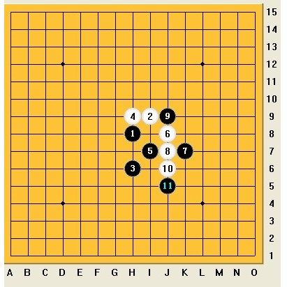

我看中村的复出
#1 我看中村的复出作者：茗弈小刀 发表时间：2009-3-26 13:00:53
序言
如果说连珠界要找出一个棋手和围棋之神吴清源相比的话,那这个人一定是中村茂.(敬称略)
关于中村先生极具传奇性的生平和辉煌的战绩不在这里赘述了,相信了解现代连珠的朋友都很了解.下面我分3个部分表达我的意思
第一部分:近现代连珠简史之我见－中村茂ＶＳ日本各路豪强
众所周知，五子棋产生于中国，而且具体产生年代基本已不可考，甚至比围棋还早（因为它的基本道理非常简单）．有着非常悠久的历史．虽然受众很广泛，小到几岁的孩童，大到年俞古稀的老人，都可以轻松掌握它的下法，但是一直得不到足够的重视．（这种情况几乎延续到了今天的神州大地）
这种情况大概到了１９世纪末，五子棋经过韩国传到日本．（近代五子棋（连珠）的创始国）日本早期五子棋爱好者以及当时的高手经过研究，终于发现了原始五子棋的最主要缺陷，既先行方黑棋几乎总可找到理论必胜的方法（这在今天来看是非常浅显的，２６基本开局如果都在无禁规则下，已经无棋可下．大概９９％以上的局面黑都可轻松必胜，而且还有相当一部分必胜有多个胜的分支，这是一个灾难性的结果）．于是人们自然想到通过限制（走＂禁手＂判黑负）黑棋的行棋方式来达到平衡的目的．经过一个漫长的发展过程（如下），五子棋的发展终于进入连珠时代．
* 1899年规定，禁止黑白双方走“双三”。
* 1903年提出了按珠形分为桂、间、连的21种开局，并规定只禁止黑方走“三三”、白子自由走。
* 1912年规定，黑方被迫走“三三”亦算输。
* 1916年规定，黑方不许走“长连”。
* 1918年规定，黑方不许走“四三三”。
* 1931年提出了，黑方不许走“四四”，十五道盘。
* 1960年正式将十九道盘改为十五道盘。
* 1988年规定，三手可交换。
* 1996年规定，黑方指定开局。

９０年代初期的一次名人战后，中村曾指出，明星黑１１应该如图下最善．这与过去争２的走法完全不同．之后经过欧洲棋手的研究，确实发现黑优势巨大，从那之后明星局有淡出高水平比赛的趋势．而进入中国研究式连珠时代，通过终结者等软件的工作，明星开局被确定
#2 Re:我看中村的复出作者：岳麓小棋后 发表时间：2009-3-26 13:16:13
中村对五子棋的理解的确到了“另人发指”的地步，常常想他是怎么处理好禁手加入后对传统五子棋思维的冲击的，斯人独寂寞，到他晚期才遇到了安度，就像我们看现在网坛的费天王和纳豆一样，祝福连珠五子，也期待新双子星座的出现，带给五子棋新的活力#3 Re:我看中村的复出作者：茗弈小刀 发表时间：2009-3-26 13:19:06
很幸福有个优秀的弟弟少帅，有个优秀的妹妹小棋后。哈哈，鲜花我就代你收下了，大家要送送一朵表示心意就好了，谢谢大家！#4 Re:我看中村的复出作者：行云流水 发表时间：2009-3-26 13:20:34
那个曾经最年轻的名人,号称拥有11段的实力，被视为神的化身的人又回来了！．
补充指出一下。在日本连珠界，中村被称为有13段实力的棋手。而山口、长谷川、河村都被称为有11段实力的棋手。矶部被称为有十段实力的棋手。
［本站用户 飞哥 于 2009-3-26 13:23:24 花5个金币送您鲜花一朵］
日本人真变态----失落刀
#5 Re:Re:我看中村的复出作者：妙玉偷星 发表时间：2009-3-26 13:20:49
很好很强大，我滴个心肝脾肺肾，中村把我雷死人
#6 Re:我看中村的复出作者：飞哥 发表时间：2009-3-26 13:22:58
写得很细致全面，谢谢顾老师的补充！#7 Re:我看中村的复出作者：茗弈总监 发表时间：2009-3-26 13:38:34
五子棋是这样演变而来的啊!
#8 Re:我看中村的复出作者：弱小的无尾猫 发表时间：2009-3-26 13:43:05
津津有味的品读了一番，感觉很多东西确实值得反思！学习学习！
#9 Re:我看中村的复出作者：茗奕的飞猪 发表时间：2009-3-26 13:51:32
学习了，谢谢少帅老师！#10 Re:我看中村的复出作者：茗弈真实的谎言 发表时间：2009-3-26 13:53:04
虽然我们更看好中国棋手，但中村等前辈的经验是值得我们学习的。#11 Re:我看中村的复出作者：丑小鸭 发表时间：2009-3-26 13:54:07
学习了，以前还不这么了解中村前辈的事迹。#12 Re:我看中村的复出作者：淡月疏星 发表时间：2009-3-26 13:55:21
好文章，支持!#13 Re:我看中村的复出作者：独爱五子连珠 发表时间：2009-3-26 13:59:06
 thanks!谢谢少帅老师!
thanks!谢谢少帅老师!
#14 Re:我看中村的复出作者：坏蛋色色色 发表时间：2009-3-26 14:00:43
 好文章顶起!
好文章顶起!#15 Re:我看中村的复出作者：五子痴 发表时间：2009-3-26 14:02:17
确实是好文章！ 温顾而知新 百看不厌#16 Re:我看中村的复出作者：梦在哪 发表时间：2009-3-26 14:04:26
很高兴来到爱五子网,学到好多东西,谢谢!#17 Re:我看中村的复出作者：梦醉南天 发表时间：2009-3-26 14:04:34
真是长见识啊，呵呵，#18 Re:我看中村的复出作者：木木夕 发表时间：2009-3-26 14:06:52
感谢爱五子棋网!感谢所有朋友!感谢少帅老师拿这么好的文章出来与大家交流分享.#19 Re:我看中村的复出作者：琦玉 发表时间：2009-3-26 14:10:55
 刀刀偶来啦!少帅老师好!少帅老师写滴文章那就一个字:棒!
刀刀偶来啦!少帅老师好!少帅老师写滴文章那就一个字:棒!#20 Re:我看中村的复出作者：茗弈淡然 发表时间：2009-3-26 14:15:58
取得如此辉煌成就之后仍然对连珠孜孜不倦的求索精神值得我们永远学习.#21 Re:我看中村的复出作者：小枫叶 发表时间：2009-3-26 14:23:22
正好缺乏这方面的知识，学习一下很好，多谢少帅老师了！#22 Re:我看中村的复出作者：习惯下棋的时候抽烟 发表时间：2009-3-26 14:23:56
全文从五子的起源,说到中村的出现发展成名,不禁为中村前辈对连珠的执着精神深深感动折服.他的经验,让我们获益;他的做棋和直接进攻能力,值得我们学习.虽然时代不同了,但前辈的劳动和成果无可否认.我们更殷切期待我们中国的棋手吴嫡老师等,创造更不同更杰出的辉煌!!#23 Re:我看中村的复出作者：一个人流浪 发表时间：2009-3-26 14:28:39
学习了,谢谢少帅老师.#24 Re:我看中村的复出作者：雨还在下 发表时间：2009-3-26 14:37:45
我觉得23楼的朋友说得很好.看了这篇文章很激动,嘻嘻,自己写不出来感想,23楼的朋友把我的想法都表达了.#25 Re:我看中村的复出作者：茗弈清波 发表时间：2009-3-26 14:42:22
写的津津有道，学习了
#26 Re:我看中村的复出作者：王颢霖 发表时间：2009-3-26 14:55:02
大家知道吗？中村注册了个qq，这几天正在q游里练棋！！#27 Re:我看中村的复出作者：雨一直下 发表时间：2009-3-26 15:02:25
哇，真的吗？ID是什么，发这儿来，有机会一定去旁观学习！我就准备天天挂三手等待这ID出现了！中村是我心目中真正的连珠神话呀，做他粉丝好多年，可惜无缘一见偶像下棋，如果能旁观他对局，也遂一大心愿啊！！#28 Re:我看中村的复出作者：二十七刀 发表时间：2009-3-26 16:19:51
很好,非常好,太好了,我见过最好的一篇.强力支持.OK
#29 Re:我看中村的复出作者：逆刃 发表时间：2009-3-26 16:37:30
“遥想连珠当年，中村卫冕了，雄姿英发，羽扇纶巾”。少帅写得太好了，中村确实能算是连珠史上的NO1，也是无法逾越的巅峰，但是“数风流人物，还看今朝”，现在的棋手也很强大，古语云“江山代有才人出”嘛。#30 Re:我看中村的复出作者：坏蛋色色色 发表时间：2009-3-26 16:45:35
太好啦写的!非常古得!#31 Re:我看中村的复出作者：坏蛋色色色 发表时间：2009-3-26 16:48:27
 姐姐笑死了吧?得了这么多给少帅的花!分我一点!
姐姐笑死了吧?得了这么多给少帅的花!分我一点!#32 Re:我看中村的复出作者：海湾浪琴 发表时间：2009-3-26 16:55:25
老师好,干妈叫我来学习了.老师你是我的偶像,干妈要我以你作为榜样,好好学习,好好练棋.#33 Re:我看中村的复出作者：雅典娜 发表时间：2009-3-26 16:57:13
挖,这么珍贵的资料!#34 Re:我看中村的复出作者：就是爱玩 发表时间：2009-3-26 17:24:12
学到了知识，支持楼主！
#35 Re:我看中村的复出作者：木木夕 发表时间：2009-3-26 19:08:08
学到了知识，支持楼主！
#36 Re:我看中村的复出作者：举步回眸浅浅笑 发表时间：2009-3-26 19:40:06
外国棋手中，我就知道中村，
#37 Re:我看中村的复出作者：越狱行辕 发表时间：2009-3-26 21:04:31
在我心里中村就是神，其他人在厉害不配这个称号#38 Re:我看中村的复出作者：雅匪 发表时间：2009-3-26 21:50:43
学习了。而且看了给人力量 （花先存着） |
#39 Re:我看中村的复出作者：掌棋盟天地一沙鸥 发表时间：2009-3-26 22:16:34
又了解了一位名人#40 Re:我看中村的复出作者：小丸.net 发表时间：2009-3-26 22:19:15
少帅的文章不可以不顶。因为我们感情太深了，我们都是江苏人，都在一个社团，而且是征战全国团体赛一个队的队友，每次比赛他都坐我边上。。。。。。。
#41 Re:我看中村的复出作者：下棋思思 发表时间：2009-3-27 7:40:20
写得不错，又让我们多了解一些。雾都少帅与少帅是一个人啊［本站用户 茗弈小刀 于 2009-3-27 12:02:56 花5个金币送您鲜花一朵］
#42 Re:我看中村的复出作者：百医天使 发表时间：2009-3-27 10:23:04
写得不错，支持一下，不小刀妹妹，什么时候把威望给我加点
#43 Re:Re:我看中村的复出作者：茗弈小刀 发表时间：2009-3-27 12:02:21
引用：当然不是一个人，少帅是江苏棋手，雾都少帅貌似重庆的吧。
原文由 下棋思思 发表于 2009-3-27 7:40:20 :
写得不错，又让我们多了解一些。雾都少帅与少帅是一个人啊
#44 Re:我看中村的复出作者：wrwak 发表时间：2009-3-27 12:20:50
济南 重庆 雾果然很大
#45 Re:我看中村的复出作者：老黄 发表时间：2009-3-27 12:46:41
少帅老师很年轻也很厉害，希望有朝一日少帅老师也能够像中村大师一样站在连珠之巅。
#46 Re:我看中村的复出作者：游戏人间 发表时间：2009-3-27 12:58:51
富森滋就是山口早期用的名字。其实是一个人#47 Re:我看中村的复出作者：游戏人间 发表时间：2009-3-27 13:12:13
可能是例子举的不好吧。。没体现出中村强大的计算能力。。比如摆的那盘首届世界杯的对局。很简单的VCT。其实中村比较精彩的VCT不是这个。印象中中村很少下出特别长而复杂的VCT。大部分都是利用优势控制到简单杀的程度。其实很正常。如果存在一个50步的VCT必然有做棋可以简化的点。中村其实最强的不是计算能力，在现在的连珠环境下没有什么人的计算能力是超出人类想象范畴的。其实我最早就是打中村的实战棋谱练习起来的。他最大的特点是严谨，很少犯错误。但是同样的这也大概和时间有关系。。严谨稳定是他最明显的特点。妙手事实上他下出的并不多。其实这个结论日本棋手也都是公认的。如果让我评价中村。他就是有极强进攻欲望的吴昊。。［本站用户 茗弈小刀 于 2009-3-27 13:21:03 花5个金币送您鲜花一朵］
［本站用户 无尽 于 2009-3-27 14:35:21 花5个金币送您鲜花一朵］
#48 Re:我看中村的复出作者：茗弈小刀 发表时间：2009-3-27 13:20:48
谢谢大鱼师傅的补充修正，大家都怀着热切的心情期待着大鱼老师和中村的交锋，祝愿我们中国五子的骄傲吴镝再创世界辉煌！#49 Re:我看中村的复出作者：岳麓小棋后 发表时间：2009-3-27 13:22:59
昔独孤求败埋剑于斯，后人引为绝唱。十年生死两茫茫，佛祖拈花一笑。一念可以让小龙女出古墓，一念也可以让你“葵花宝典”。
《广陵散》纵然精妙，又怎比得上咱这一曲《笑傲江湖》？
［本站用户 茗弈小刀 于 2009-3-27 13:24:06 花5个金币送您鲜花一朵］
#50 Re:我看中村的复出作者：启蒙 发表时间：2009-3-27 14:42:58
呵呵。看来我需要多打打中村的谱来提高自己的中盘实力了！
#51 Re:我看中村的复出作者：红豆 发表时间：2009-3-27 18:34:13
先赞一个 ！分析的如此细致！！ 正是有了以中村为首的这拨人的存在使广大的五子棋爱好者有了前进的标尺！！也有了学习的榜样！！因为你们的存在五子棋才有了今天的辉煌！！才有了今天的舞台［本站用户 冰清 于 2009-3-27 19:39:16 花5个金币送您鲜花一朵］
#52 Re:我看中村的复出作者：冰清 发表时间：2009-3-27 19:13:21
支持少帅，顶起#53 Re:我看中村的复出作者：烟淡水云间 发表时间：2009-3-28 16:50:06
我一直都很喜欢中村先生~#54 Re:我看中村的复出作者：一期一会 发表时间：2009-3-28 17:18:16
相较于ANDO,我更喜欢中村的风格，强大，小西写的太好了~~#55 Re:我看中村的复出作者：静待花开 发表时间：2009-3-31 7:44:08
汗。。。这些高手都不认识哈，希望参加比赛的选手都取得好成绩#56 Re:Re:我看中村的复出作者：吃大米饭的鱼 发表时间：2009-4-1 12:08:59
谢谢少帅老师让我们了解了五子棋界风云人物
#57 Re:Re:我看中村的复出作者：忧郁的双眼 发表时间：2009-4-1 12:13:59
不太同意哦，中村的强大体现在他的自信上，打他的谱，他都是赌对方肯定会犯错误！崇拜中村！当然，这次比赛我认识战神就算参加成功，也应该会是乔丹的第二次复出，呵呵！#58 Re:我看中村的复出作者：醉了 发表时间：2009-4-1 12:20:00
楼上说的战神是谁#59 Re:我看中村的复出作者：茗弈真实的谎言 发表时间：2009-4-2 9:55:36
好文章就得顶起！#60 Re:我看中村的复出作者：淡月疏星 发表时间：2009-4-2 13:11:32
少帅老师文笔真不错！#61 Re:我看中村的复出作者：坏蛋色色色 发表时间：2009-4-2 13:39:40
江苏的棋手必须顶！#62 Re:我看中村的复出作者：裁决殿雪月 发表时间：2009-4-2 14:02:34
大家好像把少帅敬若神明一样……汗
#63 Re:我看中村的复出作者：木木夕 发表时间：2009-4-3 9:24:37
少帅本来就好，你不服你也写呀！#64 Re:我看中村的复出作者：雅典娜 发表时间：2009-4-3 10:11:33
谢谢裁决家族的大力支持,感谢一直以来对偶门茗弈家族的关注!#65 Re:我看中村的复出作者：天逸乄西西 发表时间：2009-4-3 23:34:16
请作者加群:27122239
(加群时请说明是参赛者,谢谢)
爱五子棋网-原创文学活动宣
2009年4月3日
#66 Re:我看中村的复出作者：独爱五子连珠 发表时间：2009-4-4 9:33:07
少帅是最棒的，毫无疑问！#67 Re:我看中村的复出作者：茗弈真实的谎言 发表时间：2009-4-4 20:33:37
少帅是最棒的#68 Re:我看中村的复出作者：岳麓小棋皇 发表时间：2009-4-5 11:54:15
少帅最棒!!!!#69 Re:我看中村的复出作者：拽 发表时间：2009-4-5 21:43:43
少帅94最棒的，有不服的PK#70 Re:我看中村的复出作者：安娜制作所 发表时间：2009-4-7 14:43:54
古老的故事,不老的传说!#71 Re:Re:我看中村的复出作者：没事摆石子玩 发表时间：2009-4-8 20:06:26
支持少帅！！
#72 Re:我看中村的复出作者：茗弈总监 发表时间：2009-4-9 8:42:25
少帅的帖真是极品哈!#73 Re:Re:我看中村的复出作者：雨还在下 发表时间：2009-4-10 12:15:28
引用：
原文由 茗弈总监 发表于 2009-4-9 8:42:25 :
少帅的帖真是极品哈!
#74 Re:我看中村的复出作者：冰清 发表时间：2009-4-10 13:47:13
少帅老师的文章和小刀老师一样，三个字：没得说！#75 Re:我看中村的复出作者：菜包先生 发表时间：2009-4-10 14:45:01
小溪的文章得顶一个。#76 Re:我看中村的复出作者：静待花开 发表时间：2009-4-10 18:05:29
少帅老师真厉害！学习了。
#77 Re:我看中村的复出作者：独爱五子连珠 发表时间：2009-4-10 18:59:23
学习了，谢谢。#78 Re:我看中村的复出作者：梦在哪 发表时间：2009-4-10 22:54:58
少帅老师最棒的！#79 Re:我看中村的复出作者：雅典娜 发表时间：2009-4-11 9:09:56
少帅老师最最棒的!!#80 Re:我看中村的复出作者：弱小的无尾猫 发表时间：2009-4-11 9:43:38
没有花了，但是还是要顶下
#81 Re:我看中村的复出作者：没事摆石子玩 发表时间：2009-4-11 11:51:03
少帅老师太棒了！加油！#82 Re:我看中村的复出作者：琦玉 发表时间：2009-4-11 13:35:11
小奚老师也是江苏滴吗？空了一定拜访你。#83 Re:我看中村的复出作者：岑小鱼 发表时间：2010-10-22 19:34:26
再看一次还是很有味道